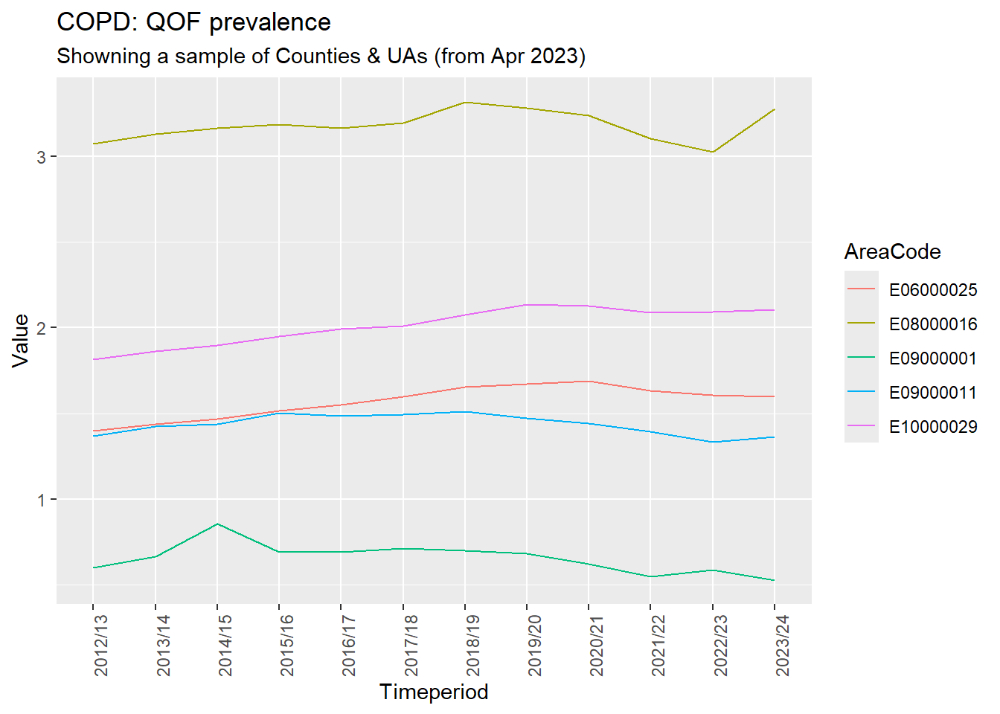

This section accesses and analyses public health data from NHS Digital’s Fingertips platform. Fingertips provides a comprehensive collection of health indicators at various geographic levels, making it an invaluable resource for understanding population health patterns.
For this CAZ health analysis, we focus particularly on respiratory health indicators including:
Asthma prevalence: Recorded prevalence of asthma in different age groups
Hospital admissions: Emergency admissions for respiratory conditions
Air quality measures: Local pollution levels and monitoring data
Mortality indicators: Deaths attributable to respiratory diseases
The Fingertips API allows us to access standardized health indicators that can be compared across different geographic areas and time periods. This provides important contextual information for understanding the baseline health status of populations in CAZ areas compared to control areas.
By combining Fingertips data with our prescription analysis, we can build a more complete picture of respiratory health trends and validate our findings against established public health surveillance systems.
Preparing sample data for visualisation by selecting the most common area type and random sample areas.
Show the code
cols <-c("IndicatorID", "AreaCode", "ParentName", "Sex", "Timeperiod", "Value")area_type_name <-table(temp_data$AreaType) # tally each group in the AreaType fieldarea_type_name <- area_type_name[area_type_name ==max(area_type_name)] # pick the group with the highest frequencyarea_type_name <-names(area_type_name) # retrieve the nameset.seed(1234)samp_areas <-sample(temp_data$AreaCode |>unique(),5)data <- temp_data[temp_data$AreaType == area_type_name & temp_data$AreaCode %in% samp_areas, cols]
We are going to show the historic data for five areas of type Counties & UAs (from Apr 2023)
Show the code
ggplot(data,aes(x = Timeperiod,y = Value, col = AreaCode ,group = AreaCode))+geom_line()+labs(title = area_avail_ind_names$IndicatorName[1],subtitle =paste0("Showning a sample of ", area_type_name))+theme(axis.text.x =element_text(angle =90))

Comprehensive Indicator Analysis
Combined Dataset Creation
Merging respiratory and asthma indicators to create a comprehensive dataset for analysis.